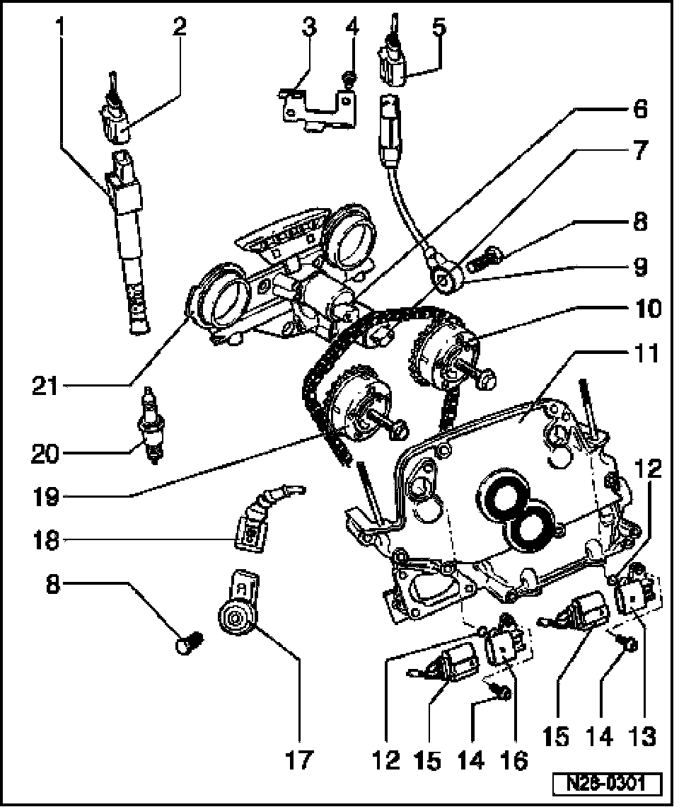

Camshaft Position Sensor: Service and Repair
Ignition Components, Removing And Installing

1 Ignition coil with power output stage (-N70-, -N127-, -N291-, -N292-, -N323- and -N324-)*
2 Connector
- Black, 4-pin
- Before disconnecting, mark allocation of connector to component
3 Bracket
- For harness connector of Knock Sensor (KS) 1 -G61-
4 10 Nm
5 Connector
- Black, 3-pin
- Terminals are gold-plated
6 Valve -1- for camshaft adjustment, intake -N205-*
- For intake camshaft
- Before disconnecting, mark allocation of connector to component
- Check valves for camshaft adjustment
7 Camshaft Adjustment Valve 1 (exhaust) -N318-*
- For exhaust camshaft
- Before disconnecting, mark allocation of connector to component
- Check valves for camshaft adjustment
8 20 Nm
- Tightening torque affects function of Knock Sensor (KS)
9 Knock Sensor (KS) 1 -G61-*
- Component location: between cyl. 1 and cyl. 3
- Contact surfaces between knock sensor and cylinder block must be free of corrosion, dirt and grease
10 Exhaust camshaft adjuster
- Identification: 32A
- Only rotate engine with camshaft adjuster installed
- With sensor wheel for Camshaft Position (CMP) sensor 2 -G163-
- If camshaft adjuster has been removed, check timing after installation:
11 Cover piece
12 Seal
- Always replace
13 Camshaft Position (CMP) Sensor 2 -G163-*
- Terminals of sensor and connector are gold-plated
- For exhaust camshaft
14 10 Nm
15 Connector
- Black, 3-pin
- Terminals of sensor and connector are gold-plated
- Before disconnecting, mark allocation of connector to component
16 Camshaft Position (CMP) Sensor 1 -G40-*
- Terminals of sensor and connector are gold-plated
- For intake camshaft
17 Knock Sensor (KS) 2 -G66-*
- Component location: between cyl. 4 and cyl. 6
- Contact surfaces between knock sensor and cylinder block must be free of corrosion, dirt and grease
- Terminals of sensor and connector are gold-plated
18 Connector
- Black, 2-pin
- Terminals of sensor and connector are gold-plated
19 Intake-camshaft adjuster
- Identification: 24E
- Only rotate engine with camshaft adjuster installed
- With sensor wheel for Camshaft Position (CMP) sensor 1 -G40-
- If camshaft adjuster has been removed, check timing after installation
20 Spark plug, 20 Nm
- Type and spark plug gap, test data, spark plugs
21 Control housing
- For camshaft adjustment.